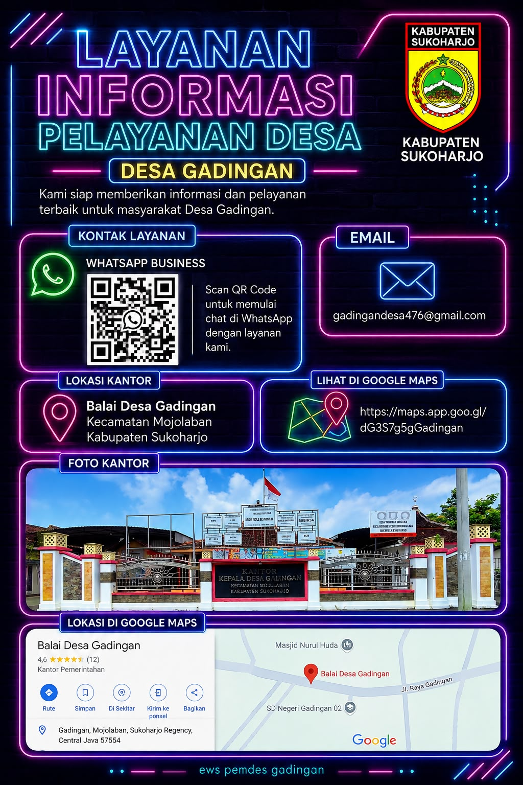
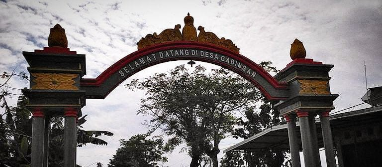
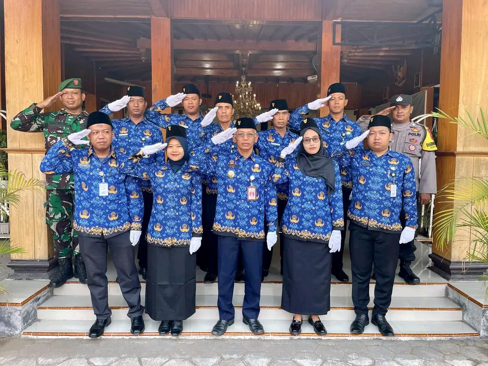
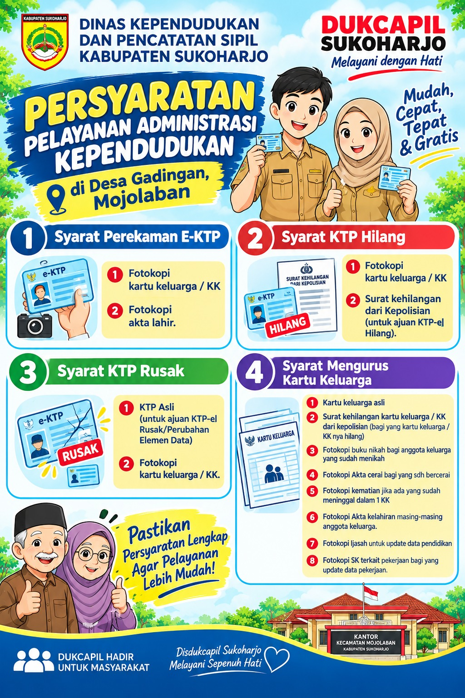
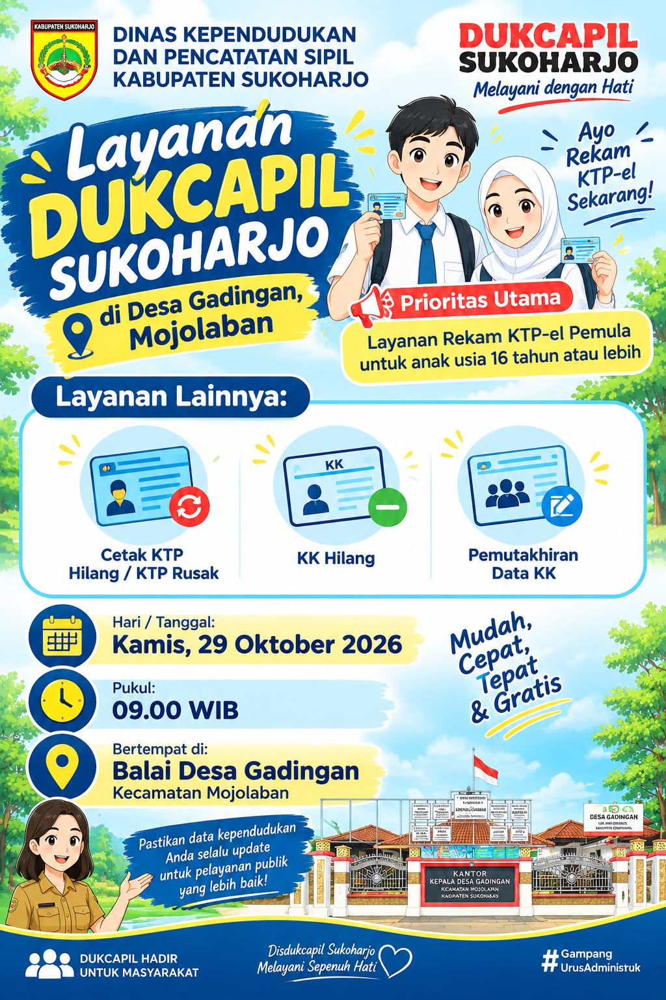
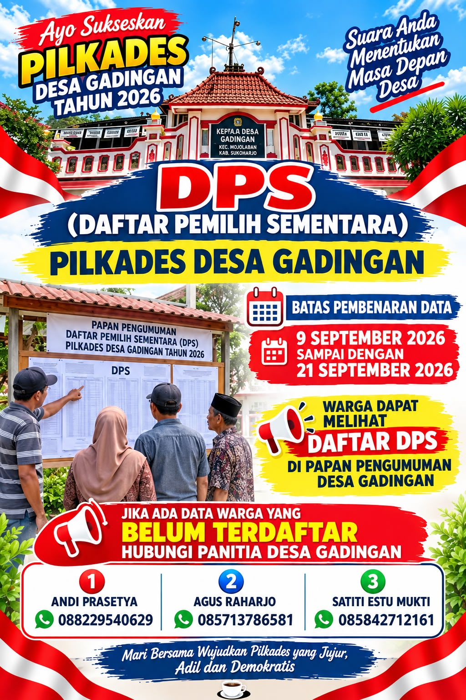
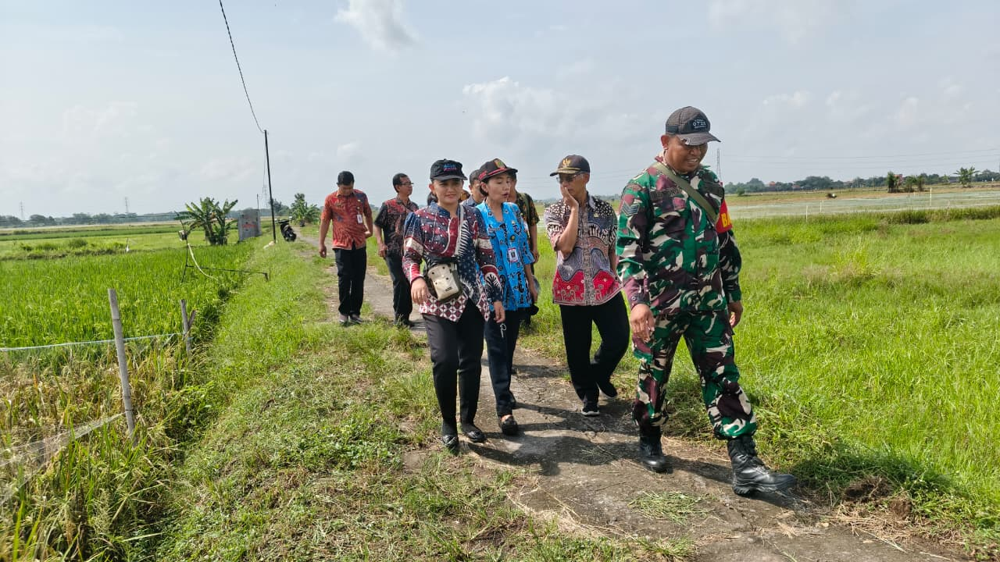

Mewujudkan Desa Gadingan yang Maju, Aman, Konstitusional, Mantap, Unggul & Rapi
Pusat informasi publik, etalase potensi sentra industri rumah tangga pengrajin shuttlecock kebanggaan Kabupaten Sukoharjo, serta pelayanan administrasi kependudukan terpadu bagi seluruh warga Desa Gadingan, Kecamatan Mojolaban.
Balai Pelayanan Desa Gadingan
Buka Hari Kerja (RW 04 Gadingan)- Senin - Kamis: 08.00 - 15.00 WIB
- Jum'at: 08.00 - 11.00 WIB
- Sabtu - Minggu: Libur / Tutup
Statistik & Demografi Desa Gadingan
Data kependudukan dan potensi kewilayahan Desa Gadingan berdasarkan Sistem Data Kependudukan Terintegrasi (Pidekso) Tahun Pelaporan 2026.
3.325 Laki-laki (50,5%) & 3.255 Perempuan (49,5%) terdata aktif.
Pengrajin shuttlecock (bola tangkis), karak, kerupuk, dan ampyang.
Hamparan sawah produktif di sepanjang timur aliran Sungai Bengawan Solo.
Berbatasan langsung dengan Kota Surakarta (±7 km dari Keraton Solo).

Sugeng Rawuh Wonten Website Desa Gadingan
Desa Gadingan berada di tepi timur bantaran Sungai Bengawan Solo, Kecamatan Mojolaban, Kabupaten Sukoharjo, berbatasan langsung dengan Kota Surakarta. Dikenal luas sebagai Desa Industri, Agamis, dan Berbudaya, sekitar 80% warga masyarakat Gadingan menggerakkan roda ekonomi kreatif melalui industri kerajinan shuttlecock (bola bulu tangkis) dan olahan pangan tradisional yang dipasarkan ke berbagai penjuru nasional hingga mancanegara.
Komitmen Pelayanan Kepala Desa Gadingan
"Website ini hadir untuk mengangkat potensi usaha bisnis warga Desa Gadingan, mempromosikan wisata kerajinan rakyat dan kegiatan kebudayaan Kabupaten Sukoharjo, serta menghadirkan pelayanan publik yang Maju, Aman, Konstitusional, Mantap, Unggul, dan Rapi (MAKMUR)."
Pelayanan Administrasi Warga
Panduan langkah pembuatan dokumen kependudukan serta akses unduhan formulir pengajuan KTP, KK, dan Akta Kelahiran di Balai Desa Gadingan.
Pembuatan KTP Elektronik
Langkah-langkah proses pembuatan KTP-el baru, penggantian KTP rusak/hilang, serta unduhan formulir pengajuan KTP warga Desa Gadingan.
Pembuatan Kartu Keluarga (KK)
Layanan penerbitan KK baru, pembaruan susunan anggota keluarga, serta unduhan formulir permohonan Kartu Keluarga resmi.
Pembuatan Akta Kelahiran
Pencatatan pelaporan kelahiran anak untuk penerbitan NIK, Kartu Identitas Anak (KIA), dan kutipan Akta Kelahiran Disdukcapil.
Surat Keterangan Pindah
Pengurusan surat pengantar pindah domisili (SKPWNI) keluar maupun pindah datang bagi penduduk wilayah Desa Gadingan.
Pengantar SKCK Kepolisian
Surat pengantar keterangan catatan kepolisian dari Pemerintah Desa Gadingan untuk keperluan melamar pekerjaan atau administrasi publik.
Surat Ket. Tidak Mampu (SKTM)
Pelayanan surat keterangan bagi keluarga kurang mampu untuk pengajuan beasiswa sekolah, bantuan sosial, maupun jaminan kesehatan.
Potensi Unggulan Desa Gadingan
Dikenal sebagai kampung industri kreatif pengrajin shuttlecock dan kuliner tradisional yang berpadu dengan pertanian subur Bengawan Solo.

Sentra Pengrajin Shuttlecock
Mayoritas rumah tangga warga Desa Gadingan memproduksi shuttlecock (bola bulu tangkis) berkualitas tinggi yang menjadi destinasi kunjungan wisata edukasi domestik dan mancanegara.
Baca Ulasan Industri
Sentra Karak, Kerupuk & Ampyang
Selain kerajinan olahraga, warga Gadingan memiliki usaha turun-temurun pembuatan karak beras, kerupuk, dan gula kacang ampyang yang menyuplai pasar Solo Raya.
Baca Ulasan KulinerSawah 127 Ha & Peternakan
Lahan pertanian tanaman padi seluas 127,00 Hektare serta sektor peternakan unggas yang menghasilkan produksi hingga 36.000 butir telur per periode pelaporan.
Baca Ulasan PertanianBerita & Pengumuman Desa Gadingan
Publikasi resmi kegiatan pemerintahan, tahapan Pilkades, penyaluran bantuan sosial RTLH BAZNAS, dan layanan masyarakat di Desa Gadingan.

09 Okt 2026Pendaftaran Calon Kepala Desa Gadingan Resmi Dibuka dan Berlangsung Kondusif
Panitia Pemilihan Kepala Desa (Pilkades) Desa Gadingan membuka tahapan pendaftaran bakal calon Kepala Desa dengan tertib, transparan, dan kondusif.

08 Okt 2026Plt. Bupati Sukoharjo Bersama BAZNAS Serahkan Bantuan Rehab RTLH Rp 15 Juta
Penyerahan bantuan program rehabilitasi Rumah Tidak Layak Huni (RTLH) senilai Rp 15.000.000 bagi warga penerima manfaat di Desa Gadingan.

31 Agu 2026Penyaluran Bantuan Pangan Beras Bulan Juni–Agustus oleh BULOG di Desa Gadingan
Pemerintah Desa Gadingan memfasilitasi penyaluran cadangan pangan beras pemerintah bekerja sama dengan Perum BULOG secara tertib dan tepat sasaran.
Galeri Dokumentasi Kegiatan
Rekam jejak visual pelayanan masyarakat, penyaluran bantuan sosial, dan penyelenggaraan pemerintahan Desa Gadingan.



Kegiatan Balai Desa
KemasyarakatanLokasi & Kontak Pemerintah Desa Gadingan
Informasi alamat balai desa, jadwal pelayanan masyarakat, serta peta lokasi Desa Gadingan di Kecamatan Mojolaban.
Kantor Desa Gadingan
Melayani administrasi kependudukan (KTP, KK, Akta), surat pengantar warga, informasi publik PPID, serta pengaduan masyarakat.